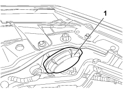
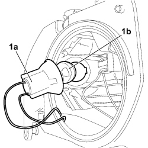

5540B28 BULB (ONE) FOR FRONT DIRECTION INDICATOR IN HEADLAMP/LIGHT CLUSTER, LH OR RH - R.R
- Path
- Procedures > 55 ELECTRICAL EQUIPMENT > 5540 EXTERIOR LIGHTING > 5540B HEADLAMPS > 5540B28 BULB (ONE) FOR FRONT DIRECTION INDICATOR IN HEADLAMP/LIGHT CLUSTER, LH OR RH - R.R
- Kind
- repair procedure (removal / refitting; the operation number is the code)
- Applies to
- all engines; all production periods
- Interactive page
- https://sloeber94.github.io/elrnDB-fCrm/en/#/194000736
Applies to: all engines; all production periods
 Removing
Removing
 Refitting
RefittingOp. 7040D30 ENGINE BAY FRONT BEAM COVER - R R
If the bulb that needs replacingit the one on the right side:
Op. 1048A10 AIR FILTER ASSEMBLY - R.R.
Proceed as follows for both bulbs:
1. Undo the protective cover and remove it.

Applies to: all engines; all production periods
1. Rotate slightly to release the tabs from the bayonet fitting and extract the bulb holder (1a) and bulb (1b).

Applies to: all engines; all production periods
Refitting
Removing- Check the condition of the bulb and make sure it is clean; if necessary, replace it with a new one.
- Fit the bulb in the bulb holder.
- Place the bulb holder in position and rotate slightly to attach the bayonet fitting.
- Place the cover in position and tighten it to close.
If the operation has been carried out on the right side of the vehicle:
Op. 1048A10 AIR FILTER ASSEMBLY - R.R.
For both sides proceed as follows: